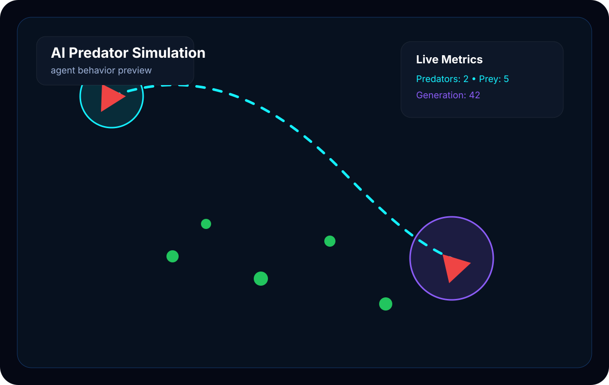

AI Predator Simulation
Complex multi-agent survival simulation where predators and prey learn, adapt, and exhibit emergent behaviors in a dynamic ecological environment.
🎯 The Problem
Understanding emergent behavior in multi-agent systems is crucial for AI research, game development, and ecological modeling. Traditional simulations use rigid rules that don't capture the complexity of real predator-prey dynamics.
Most simulations hard-code behaviors, missing emergent complexity.
Simplified models don't capture resource competition, hunger, and adaptation.
Few accessible tools exist for studying multi-agent emergence in survival contexts.
👥 Users & Impact
Target Users
- AI researchers studying multi-agent emergence
- Game developers designing realistic NPCs
- Ecology students modeling predator-prey dynamics
- Anyone curious about autonomous agent behavior
🎬 Demo
Simulation Preview
Emergent hunting behavior map
Predator routes, prey clusters, and generation metrics in one view.
Preview Panels
🚀 How to Run
Quick Start
# Clone the repository
git clone https://github.com/charlie2233/AI-predator-simulation.git
cd AI-predator-simulation
# Install dependencies
pip install -r requirements.txt
# Run the simulation
python main.py
# Or with custom parameters
python main.py --predators 10 --prey 50 --world-size 800Requires Python 3.9+ and pygame for visualization.
🏗️ Architecture
┌─────────────────────────────────────────────────────────────┐
│ AI Predator Simulation │
├─────────────────────────────────────────────────────────────┤
│ │
│ ┌──────────────┐ ┌──────────────┐ ┌──────────────┐ │
│ │ World │───▶│ Agent │───▶│ Decision │ │
│ │ State │ │ Manager │ │ Engine │ │
│ └──────────────┘ └──────────────┘ └──────────────┘ │
│ │ │ │
│ ▼ ▼ │
│ ┌──────────────┐ ┌──────────────┐ ┌──────────────┐ │
│ │ Resource │ │ Neural │◀───│ Behavior │ │
│ │ System │ │ Network │ │ Tree │ │
│ └──────────────┘ └──────────────┘ └──────────────┘ │
│ │
│ Agent States: Hungry │ Hunting │ Fleeing │ Resting │ Dead │
├─────────────────────────────────────────────────────────────┤
│ Visualization: Pygame │ Config: YAML │ Logging: JSON │
└─────────────────────────────────────────────────────────────┘
Tech Stack
✨ Key Features
Neural Decision Making
Agents use small neural networks trained on survival outcomes to make decisions.
Pack Hunting
Predators naturally form groups and coordinate attacks without explicit programming.
Resource Ecosystem
Plants grow, prey eat plants, predators eat prey—full food chain simulation.
Evolution Over Time
Successful strategies propagate. Watch behaviors emerge across generations.
Sensory Systems
Agents have vision cones, proximity detection, and energy awareness.
Real-time Stats
Track population dynamics, hunt success rates, and ecosystem balance live.
📊 Metrics & Results
Interesting Findings
After ~50 generations, predators consistently develop flanking behaviors and prey form defensive clusters. Neither behavior was programmed—they emerged from survival pressure alone.
🗺️ Roadmap
Basic predator/prey agents, resource system, visualization
Add learning component, emergent behavior tracking
Unity port for richer environments and behaviors
Browser-based version for easy experimentation
🙏 Credits
Charlie Han
Atrak Team
Pygame
Boids, NEAT, Ecological Models
Inspired by Craig Reynolds' Boids, the NEAT algorithm, and classic predator-prey ecological models. Built as an exploration of emergent AI behavior.